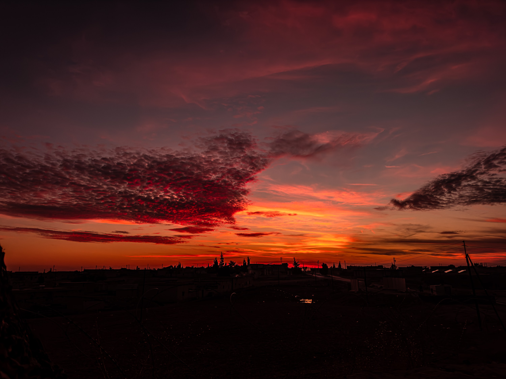

FOTOĞRAF PORTFÖYÜ
Dünyaya başka
bir açıdan bak.
Işığın, zamanın ve hikâyelerin izinde.
Fotoğrafları keşfetHER KARE BİR YERDEN BAŞLAR
Bazen bir şehir,
bazen yalnızca ışık.
Şehrin kıyısından dağların sessizliğine uzanan bu seçki; görülen yerleri, değişen ışığı ve yolda karşılaşılan küçük anları bir araya getiriyor.
GÖRSEL GÜNLÜK / 01—28
Seçilmiş kareler
Dünyaya, farklı mesafelerden ve farklı zamanlarda bakış.
BİR ARADA GÖRÜLENLER
Fotoğraf hikâyeleri
Aynı duyguda buluşan karelerden küçük seçkiler.
HER AÇIDAN KARE HAKKINDA
Bakış değişince,
hikâye de değişir.
Her Açıdan Kare, şehirlerden kıyılara ve yol üstü manzaralara uzanan kişisel bir görsel günlük. Her fotoğraf, karşılaşılan bir anı olduğu gibi saklıyor.
Işığın yönü, günün saati ve durup bakmayı seçtiğimiz yer… Bazen bir kareyi anlatmaya bunlar yeter.
BİR SONRAKİ KAREYE
Bir hikâye
başlatalım.
Projeler, iş birlikleri veya fotoğraflar üzerine konuşmak için Instagram’dan bana ulaşabilirsiniz.